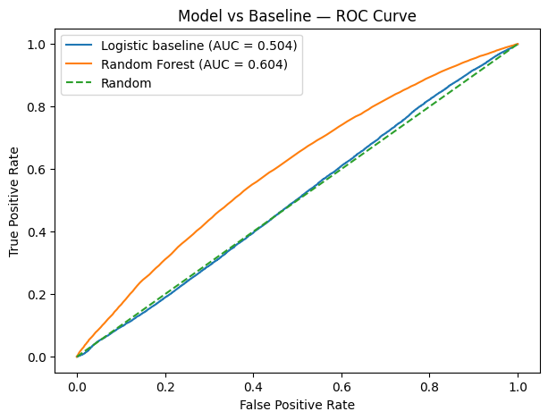
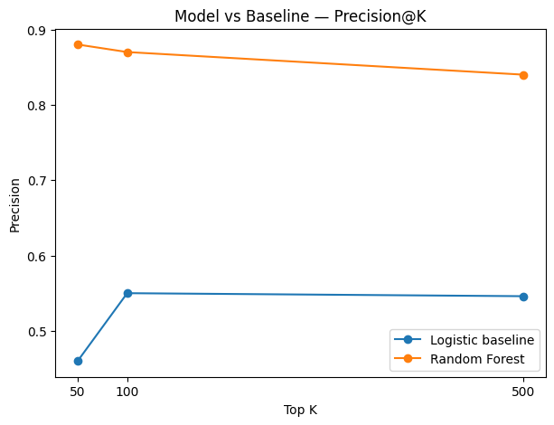

Abstract
Can machine learning help prioritize content items that show signs of declining search performance? I trained and evaluated a Random Forest classifier using historical performance and query-level signals from the FlyRank internship warehouse full release. The model was compared with a Logistic Regression baseline using a client-level holdout split. The Random Forest achieved a ROC-AUC of 0.604 compared with 0.504 for the baseline and reached 0.880 Precision@50. These results suggest that the model can be useful as a directional prioritization signal for human review, while not proving that content refreshes will improve future performance.
1. Problem
Research Question
Can machine learning help prioritize content items that show signs of declining search performance?
The goal is to determine whether a machine-learning model can rank potentially declining content more effectively than a simple baseline, allowing a human reviewer to focus attention on the highest-priority items first.
The model is designed as a directional decision-support tool. It does not guarantee that refreshing a page will improve its future performance.
2. Data
Data Source
This analysis uses the FlyRank internship warehouse full release hosted on Hugging Face.
The analysis used these tables:
dim_clients— client-level metadata and available data-history dates.dim_content— content-level metadata.fact_content_daily_performance— daily Google Search Console performance data.fact_content_query_90d— content/query-level signals aggregated over the available 90-day window.
Modeling Window
The modeling dataset used a 60-day performance window split into two 30-day periods:
- Previous 30 days — historical performance signals.
- Latest 30 days — used to define the observed decline outcome.
Content items were required to have at least 100 impressions in the previous 30-day period.
This produced 111,247 content items with sufficient performance history. After removing rows with missing values in the selected modeling features, 102,203 items remained.
No client names, domains, URLs, search queries, or other private identifying information are included in this public-facing analysis.
3. Methodology
Prediction Target
A content item was labeled as declining when its impressions in the latest 30-day period were less than 80% of its impressions in the previous 30-day period.
Features
- Previous 30-day impressions (
imp_prev30) - Visible query count (
visible_queries) - Rare-query impression share (
rare_share) - Anonymized-query impression share (
anon_share) - Top-query impression share (
top_query_share)
Models
The primary model was a Random Forest Classifier with 200 trees and a fixed random seed of 42.
Logistic Regression was used as the baseline. Both models used the same five features and the same train/test split.
Validation
A client-level holdout split was created using
GroupShuffleSplit. Approximately 75% of the modeling rows
were used for training and 25% for testing while keeping clients
separated between the training and test sets.
The final test set contained 51,702 rows from 13 clients.
Evaluation Metrics
Because the practical objective is to prioritize a smaller group of pages for human review, evaluation focused on both overall discrimination and top-ranked performance:
- ROC-AUC
- Precision@50
- Precision@100
- Precision@500
Leakage Check
The decline label was calculated from the latest 30-day impressions compared with the previous 30-day impressions.
However, the query-level signals came from the available 90-day query table. Because this window can overlap with the outcome period, these features introduce a potential temporal leakage concern.
Results should therefore be treated cautiously as a prioritization experiment rather than a fully production-ready forecasting system.
4. Results
Model vs Baseline
| Metric | Logistic Regression | Random Forest |
|---|---|---|
| ROC-AUC | 0.504 | 0.604 |
| Precision@50 | 0.460 | 0.880 |
| Precision@100 | 0.550 | 0.870 |
| Precision@500 | 0.546 | 0.840 |
The Random Forest achieved a ROC-AUC of 0.604, compared with 0.504 for Logistic Regression.
At the top 50 ranked items, the Random Forest achieved 0.880 Precision@50, meaning 88% of the highest-ranked items were labeled as declining in the test set.
The Random Forest had lower overall classification accuracy (61.3%) than the Logistic Regression baseline (65.8%). This is not a contradiction: the research objective is ranking and prioritization, not maximizing overall classification accuracy.


5. Interpretation & Limitations
Feature Importance
| Feature | Importance |
|---|---|
| Rare-query impression share | 0.236 |
| Anonymized-query impression share | 0.233 |
| Previous 30-day impressions | 0.222 |
| Top-query impression share | 0.192 |
| Visible query count | 0.117 |
Feature importance provides a directional view of which input signals contributed to the Random Forest's decisions. It should not be interpreted as evidence of causation.
Limitations
- The client-level holdout provides a stronger generalization test but also makes the prediction task more difficult.
- The model predicts the defined declining-impressions label; it does not prove that a content refresh will cause performance to improve.
- The dataset is an anonymized internship dataset and should not be interpreted as evidence about any specific company or website.
- The available features do not capture every factor affecting search performance, including major search-engine changes, changes in search intent, and broader competitive shifts.
- The available 90-day query data may overlap with the outcome period, creating a potential temporal leakage concern.
- The Random Forest performed better than the baseline on ranking metrics, but this does not establish that it will perform equally well on every future dataset or client.
The model should therefore be used as a decision-support and prioritization tool, with final content decisions remaining subject to human review.
6. Ranked Recommendations
1. Review the highest-ranked declining pages first
Start with the pages appearing at the top of the model's ranking. The Precision@50 result of 0.880 indicates a high concentration of labeled declining pages in the highest-ranked group.
2. Investigate demand and query signals
For high-priority pages, review the available query-level signals alongside historical impressions.
3. Review content before making changes
A high model score should be treated as a review signal. Human reviewers should check search intent, content quality, freshness, competition, and whether the existing page still satisfies user needs.
4. Prioritize limited resources
If a team cannot review every page, use the ranking to focus attention on a smaller high-priority set first.
5. Measure results after changes
Any content refresh should be followed by monitoring search performance to determine whether the change produced an improvement.
7. Reproducibility
The project repository contains the notebooks, scripts, documentation, and analysis artifacts required to understand and reproduce the workflow.
- Model: Random Forest Classifier
- Trees: 200
- Random seed: 42
- Baseline: Logistic Regression
- Validation: Client-level GroupShuffleSplit
- Test set: 51,702 rows from 13 clients
Credentials and private datasets are not committed to the repository. Runtime credentials are supplied separately when required by the notebook.
8. Acknowledgments & Data Credit
Built on the FlyRank ML Internship dataset .
This public-facing paper intentionally excludes client names, domains, URLs, search queries, and other private identifying information.